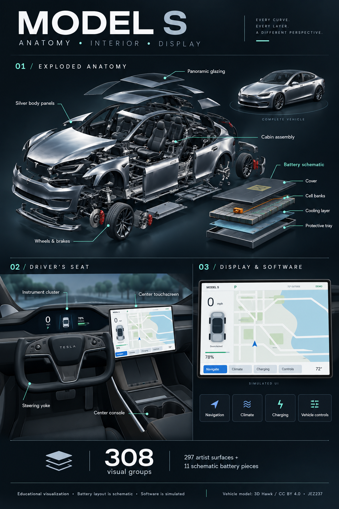

Every layer.
One picture.
The silver Model S, its interior, and its display—brought together in an illustrated breakdown of the studio.
{kind=link}
1024 × 1536 pixels · PNG · 1.9 MB
Inside the breakdown
- Exploded anatomy
Silver body panels, panoramic glazing, wheels and brakes, cabin assembly, and a separate schematic battery with cover, cell banks, cooling layer and protective tray.
Explore all 308 visual groups → - Driver’s seat
The steering yoke, instrument cluster, center touchscreen and center console, viewed from inside the cabin.
Enter the driver’s seat → - Display and software
The studio’s simulated navigation, climate, charging and vehicle controls. Sample values illustrate the interface.
Try the interactive display →
The studio contains 297 artist surfaces and 11 added schematic battery pieces. This AI-generated illustration is an educational overview; its geometry and labels are not a verified engineering drawing. The software shown is simulated.
Based on the studio’s adapted Model S asset by 3D Hawk, CC BY 4.0. Illustration created from captures of the studio and cockpit.
Operating manual & technical references →